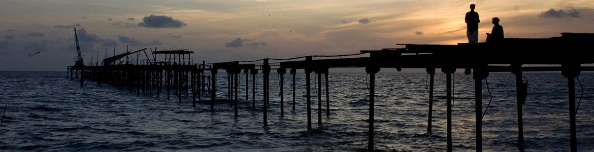

Illikkal Kallu is a Thalanadu located on top of the Illickal Malaa in the Kottayam district of Kerala,
India.The distance from kottayam railway station to illikal kallu is 57km. Situated at around 4000 feet above sea level,
Illickal Kallu is a major tourist attraction in Thalanadu. L. S. G.D., Thalanadu village of Meenachil taluk.
Only one half of the original rock remains, as the other half of the rock has fallen off. The nearest town is Teekoy.
Numerous mountain streams originate from this peak and flow down to form the Meenachil River.
Tourists must trek less than 1 km to reach the summit of the peak
Illikkal Mala comprises three hills, each rising up to 4,000 ft above sea level. Each of the hills has a peculiar shape.
One of them resembles a mushroom, which is why it is known as Kuda Kallu (umbrella-shaped rock).
The second hill has a small hunch on the sides and is therefore referred to as Koonu Kallu (hunch back rock).
There is a 1⁄2-foot-wide bridge called Narakapalam (bridge to hell) connecting these two hills.
The beauty and the landscape of illikkal kallu is similar to that of the pillar rocks in Kodaikanal.
It is said that the mythical medicinal herb Neela Koduveli grows here.
This mythical blue flower is also believed to possess supernatural powers,
which could increase wealth and ensure a rich harvest.
Ilaveezhapoonchira is a tourist destination located in Melukavu village in Kottayam district near Kanjar.
Ilaveezha Poonchira is surrounded by three enchanting hillocks - Mankunnu,
Kodayathoormala and Thonippara. This makes the place ideal for trekking (Elevation 962 m (3155 ft)).
Ilaveezhapoonchira is an established destination for both domestic as well as foreign tourists.
It is a hill station in bordering Idukki Kottayam district, Kerala, southern India.
It is 3,200 feet above sea level and surrounded by lush green tea plantations and valleys.

Marmala Waterfall is a waterfall which is located a few kilometres away from Erattupetta, in Kottayam district, Kerala, India, It is exactly 8 km from Teekoy. The road from Mangalagiri to Marmala Waterfall is currently under construction. One has to trek through the middle of an estate, over the slippery rocky path, in order to reach the waterfalls. Marmala waterfall is about 40 meter in height, plunging into a 12-meter deep pool and feeds the River Teekoy.